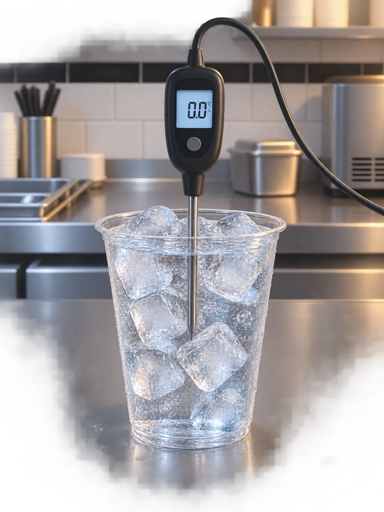
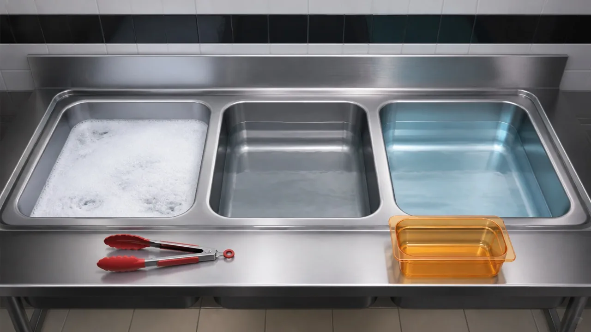
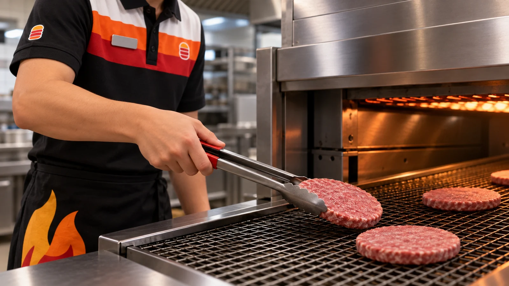
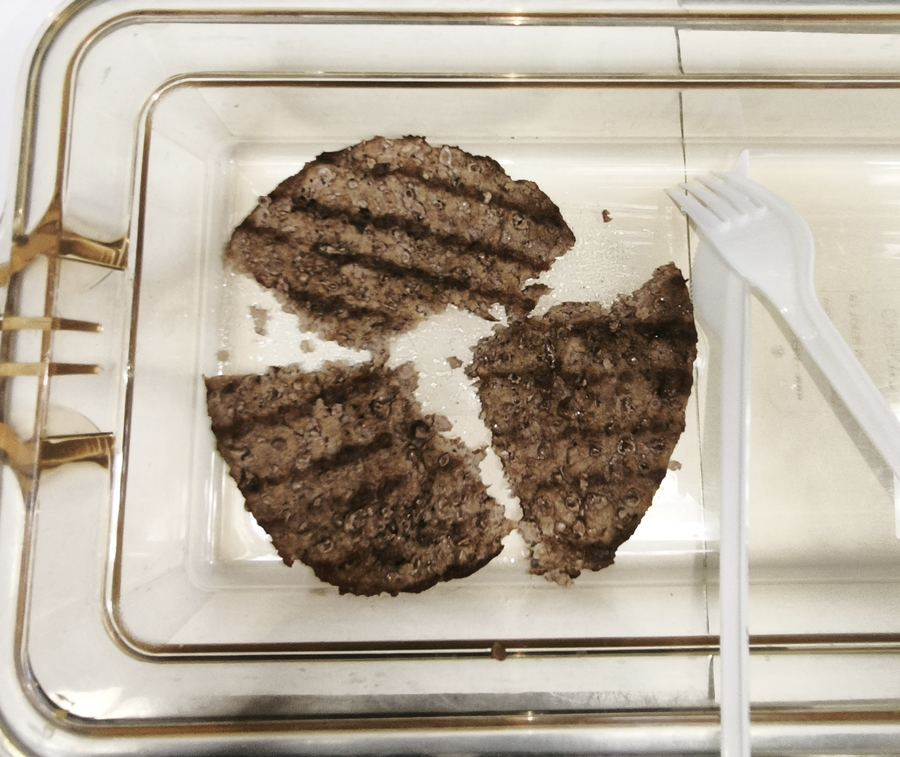

Ты научишься правильно готовиться к замеру, выбирать оборудование, ставить мясо в бройлер, измерять температуру и принимать решения по результату. Задания помогут отработать навык до того, как ты применишь его на практике с Наставником.
Материалы для изучения
Нажми на памятку, чтобы открыть её крупно.
Готов начинать?
Введение и готовность к замеру
Привет! Сегодня ты готовишься замерить мясо.
Замер температуры готовых котлет из говядины — важнейшая ежедневная процедура. Она нужна, чтобы обеспечивать безопасность и качество продукта.
Когда проводится замер
Минимум 3 раза в день. Если ресторан открыт после 00:30 — 4 раза.
За полчаса до открытия
За полчаса до дневного пика
За полчаса до вечернего пика
До 00:30
— если ресторан работает после 00:30
Перед тем как начать, убедись, что…
Как калибруется термощуп

Калибровку термощупа ты отработаешь на практике вместе с Наставником.
Открой памятку и вспомни порядок действий: температура воды 38–55 ℃, антибактериальное мыло, полное высыхание дезинфектора.
Подготовка
Руки помыты. Теперь твоя задача — подготовить весь необходимый инвентарь.
Отметь только те предметы, которые понадобятся для замера. Можно выбрать несколько.
Ты подготовил инвентарь: откалиброванный щуп, чистый и сухой пен, спиртовые салфетки и секундомер.
Куда нужно положить предметы, чтобы сделать верный замер? Один верный вариант.
Следующий важный шаг — подготовить термощуп к работе.
Как ты будешь готовить щуп? Один верный вариант.
Теперь ты знаешь, что обрабатывать щуп нужно спиртовой салфеткой. Но что делать, если салфетки закончились?
Один верный вариант.

Жарим мясо
Дисклеймер открылся при входе в главу. Если закрыл — открой ещё раз кнопкой ниже.
Куда закладывать мясо
Нажми на карточку, чтобы перевернуть её и увидеть схему.
Ты готов к жарке мяса. Как думаешь, нужно ли снова помыть руки?
Один верный вариант.
Приступаем к приготовлению
Убедись, что оборудование нагрелось
до нужной температуры
Определи сторону
, на которой выставлены настройки для нужного мяса
Положи мясо металлическими щипцами Lift-and-grip
в нужное отделение
| Гамбургер | 12 штук |
| Воппер | 8 штук |
| Ангус | 6 штук |
Ставь жариться одну котлету.

Ты положил мясо в жарочный шкаф. Что нужно сделать дальше?
Один верный вариант.
Оценка внешнего вида мяса
Мясо приготовилось, и ты достал его из жарочного шкафа. Перед тем как замерить температуру, нужно оценить внешний вид котлеты.
Выбери котлеты, которые ты не будешь использовать для замера. Можно выбрать несколько.
- Прожарена полностью — нет розовых и сырых участков
- Не сухая — поверхность не растрескавшаяся и не крошится
- Целая — без разрывов и отломанных краёв
- Чёткие полоски от гриля — между ними ты и воткнёшь щуп
Замер температуры говядины
Ты верно оценил внешний вид котлеты и убедился в её качестве и безопасности. Теперь приступай к замеру.
Как верно расположить щуп? Один верный вариант.
Обрати внимание: остриё уходит между полосками от гриля, а не в полоску, и заходит в самую середину котлеты по толщине.
Щуп введён, температура начала расти. Твои действия теперь?
Один верный вариант.
Также тебе необходимо знать верный диапазон температуры и ориентироваться на него при замере.
При каких температурах результат замера считается корректным и мясо можно использовать? Верных вариантов несколько.
Непростые ситуации
Теперь давай представим несколько непростых ситуаций и найдём для них решения. Для каждого сценария расположи шаги в верной последовательности.
Мясо на вид сухое и/или температура выше допустимого значения (75 ℃). Перетащи шаги в верном порядке.
Мясо на вид сырое и/или температура ниже допустимого значения (68 ℃). Перетащи шаги в верном порядке.
Ты провёл замер мяса, а свободной ячейки PHU не оказалось. Что нужно делать? Один верный вариант.
Диапазон 68–75 ℃ и порядок действий, если температура выше или ниже нормы. Нажми, чтобы открыть крупно.
Пять правил, которые нужно держать в голове на каждом замере.
Бракераж и журнал замеров
Бракераж — это оценка запаха, вкуса и текстуры. Он нужен, чтобы убедиться: мясо не только безопасно, но и имеет правильные органолептические свойства.
Проводится 1 раз в день с утра или чаще — при возникновении инцидента.
После замера температуры с помощью одноразовых приборов разрежь котлету на 3 равные части и оцени запах, вкус и текстуру.

Характерный, говяжий
Без посторонних привкусов
Мягкая, сочная
Электронные журналы
Журнал замеров «Технологический маршрут»
Заполняется после каждого замера.
Журнал бракеража
Заполняется 1 раз в день с утра.
Заполняй бумажный журнал. Как это сделать, тебе покажет Наставник.
Данные вноси не позднее 2 часов после замера. 4 нарушения за 30 дней считается критическим фактором.
Ты проводишь бракераж. Твоя задача — распределить мясо по двум категориям.
Перетащи каждое описание котлеты в нужную корзину. На телефоне — держи палец на карточке и веди её к корзине.
Рабочие ситуации
Теперь потренируемся на реальных рабочих ситуациях, с которыми ты можешь столкнуться на смене. Это поможет быстро и правильно принимать решения в нестандартных случаях.
Ты замеряешь мясо, воткнул щуп верно — под углом 45° в центр котлеты между полосками от гриля. Температура дошла до 70 ℃, ты включил секундомер на 5 секунд, но она начала падать. Что ты сделаешь?
Верных вариантов несколько.
Ты замеряешь мясо. Котлета выглядит красивой, прожаренной. Ты воткнул щуп правильно, но температура дошла до 65 ℃ и остановилась либо начала падать. Что ты сделаешь?
Один верный вариант.
Ты замеряешь мясо. Котлета набрала 76 ℃. Что нужно сделать?
Верных вариантов несколько.
Ты ставил пиковый замер — загрузил полную партию котлет в бройлер. Замеряешь первую котлету, и она не набрала температуру (ниже 68 ℃). Что нужно сделать?
Один верный вариант.
Ты замеряешь партию мяса при пиковом замере. Одна котлета набрала 78 ℃ — выше допустимого максимума. Что нужно сделать с партией?
Один верный вариант.
Ты ставишь мясо для пикового замера и загружаешь полную партию котлет в бройлер. Какой кусок мяса ты можешь взять на замер?
Один верный вариант.
Ты делаешь пиковый замер. Достал один кусок из бройлера и начал замерять его температуру — мясо не набрало нужную температуру (ниже 68 ℃). В это время другой сотрудник, не разобравшись в ситуации, увидел, что у него закончилось мясо, и забрал следующие упавшие котлеты из бройлера, поставив их в PHU. Что тебе нужно сделать?
Верных вариантов несколько.
Итоговое задание
Расположи шаги процедуры замера температуры говядины в правильном порядке. Перетаскивай карточки.
Поздравляем!
Ты полностью прошёл процедуру замера температуры говядины. Теперь будешь отрабатывать её на практике на этаже с Наставником.
Кнопка передаёт в LMS статус «Пройден».